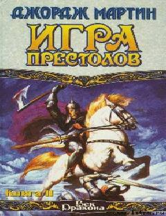

ИПTaxtlar o'yini epik romanining ikkinchi qismi bo'lib, saroy sirlari va qahramonlar taqdirini hikoya qiladi.
Bu asar mashhur fantastik epopeyaning ikkinchi qismi bo'lib, taxt talashishlar, saroy intriqalari va xavfli sarguzashtlarni hikoya qiladi. Eddard Stark o'tmish xotiralari va og'ir yaralar bilan kurashib, qirollikdagi murakkab vaziyatni tushunishga harakat qiladi. Kitob o'quvchilarni tilsiz sehr va shafqatsiz kurashlarga boy xayoliy olib boradi.